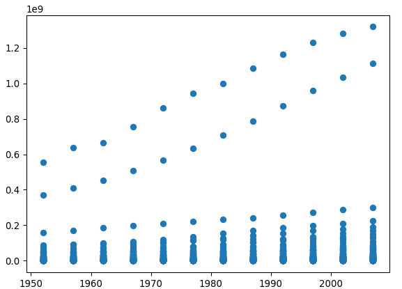

You can use base Python to perform basic visualizations with a dataset. Let’s take a look at a few examples.
Let’s re-load in our Gapminder data:
import pandas as pd
url = 'https://raw.githubusercontent.com/jstaf/gapminder/master/gapminder/gapminder.csv'
df = pd.read_csv(url)import matplotlib.pyplot as plt
plt.scatter(x = df['year'], y = df['pop'])
df_AF = df[df['continent'] == 'Africa']
df_AF.head()## country continent year lifeExp pop gdpPercap
## 24 Algeria Africa 1952 43.077 9279525 2449.008185
## 25 Algeria Africa 1957 45.685 10270856 3013.976023
## 26 Algeria Africa 1962 48.303 11000948 2550.816880
## 27 Algeria Africa 1967 51.407 12760499 3246.991771
## 28 Algeria Africa 1972 54.518 14760787 4182.663766plt.scatter(x = df_AF['year'], y = df_AF['pop'])Base Python works well for simple visualizations, but Altair is a package that helps to create personalized and detailed visualizations to suit any task. See the article titled ‘Visualizing with Altair in Python’ to learn more about it.